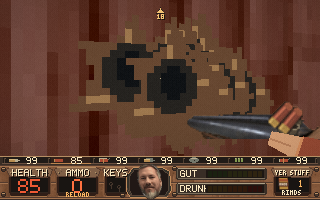

THE HICKSTON INCIDENT
CRAZY LEGS MUNDELL RAMPAGE
VERSION 2.0 · 320×200 · 16 WEAPONS · 4 COUNTIES
VERSION 2.0 · 320×200 · 16 WEAPONS · 4 COUNTIES

The Hickston Incident is a hand-built retro FPS in the spirit of the 1995 shareware shooters: big guns, ugly locals, and a county that wants you dead.
Windows: Windows 10/11 64-bit, 4 GB RAM, 200 MB free disk. The single-file EXE needs no installer.
Android: Android 7.0+, arm64 device, landscape screen. Enable installs from your browser/file manager.
Browser: A current Chrome, Edge, Firefox, or Safari release with WebAssembly and WebGL enabled. Keyboard and mouse are recommended; touch controls appear on phones and tablets.
Controls: WASD moves, mouse aims, LMB fires, RMB alt-fires, E uses, F cycles weapons, Space jumps, Shift sprints, Esc pauses. Gamepads are detected automatically on desktop.
Every download is built from this repository by GitHub Actions. Saves live in %APPDATA%\CrazyLegsMundellRampage on Windows and in app-private storage on Android.
Read the source repository or the 2.0 change log. Builds are unsigned; Windows SmartScreen may ask you to confirm the first launch.
Pygame-ce · Python 3.12 · PyInstaller · python-for-android · pygbag